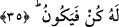
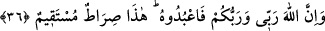
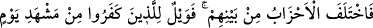
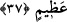

35. Çocuk edinmek, Allâh’a yakışmaz. O’nun şanı yücedir. O, bir işi yapmak
istediği zaman ona sadece “Ol” der, o da olur.
“Çocuk edinmek, Allâh’a yakışmaz” O’nun için doğru ve düzgün olmaz. et-
Te’vîlâtü’n-Necmiyye’de şöyle der: “Yani Allâh’a, bir cüz/parça edinmek yakışmaz.
Çünkü çocuk babanın bir parçasıdır. Nitekim Hz. Peygamber (a.s.): “Fâtıma benden bir
parçadır.”[19] buyurmuştur.”
“O’nun şânı yücedir.” Yani Allah, hristiyanların iftirâsından çok çok münezzehtir.
Çünkü kadîm olanın cinsi olmaz. Onun bir cinsi olmadığı için hristiyanlar “Onun
üstünlüğü yoktur” demişlerdir.
“Allah, bir işi yapmak” bir şeyin olmasını “istedi mi ona sadece ‘Ol’ der, o da
olur.” Allah, İsa’ya “Ol” dedi, o da babasız olarak oluverdi. Burada “demek”, var
etmenin süratinden mecâzdır. Yâni Allah Teâlâ, bir şeyin olmasını istediğinde bu O’nun
için imkânsız değildir. İstediği bir şey, beklemeden hemen istediği bir şekilde meydana
gelir. Tıpkı itâat edilmeye lâyık bir âmirin emrini alan itâatkâr memur gibi. Emredilen
şey, onun tarafından beklemeden ve saklanmadan hemen yerine getirilir. Bu ifâde tarzı,
“temsil” denilen mecâzdır.
36. Şüphesiz Allah benim de Rabb’im, sizin de Rabb’inizdir; O’na kulluk edin.
İşte doğru yol budur.
“Şüphesiz, Allah benim de Rabb’im, sizin de Rabb’inizdir; O’na” Yani Rabb’iniz
olan Allâh’a “kulluk edin. İşte doğru yol” sâlikini saptırmayan yol “budur” size
söylediğim tevhiddir.
37. Kendi aralarında çıkan hizipler, ayrılığa düştüler. Artık büyük bir günü
görmekten ötürü vay kâfirlerin hâline!
“Kendi aralarında çıkan hizipler, ayrılığa düştüler.” Yani insanlar arasındaki çeşitli
cemâatler, ayrılığa düştüler. Bunlar, kendilerine peygamber gönderilen kavimlerdir.
Nastûrîler, “İsa Allâh’ın oğludur.”, Yakûbîler, “O, Allah’tır. Önce yere indi, sonra göğe
çıktı.”, Melkânîler ise “O Allâh’ın kulu ve rasûlüdür.” dediler.